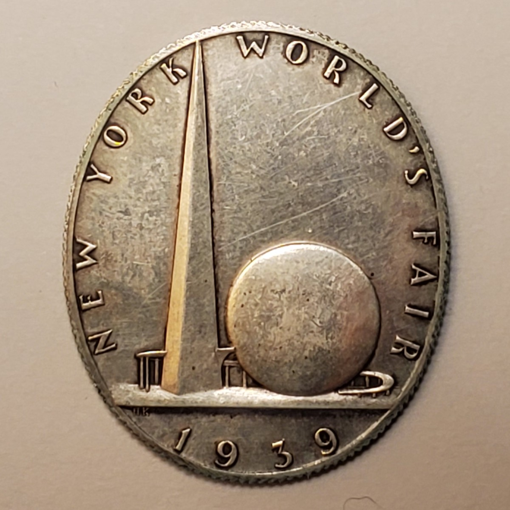
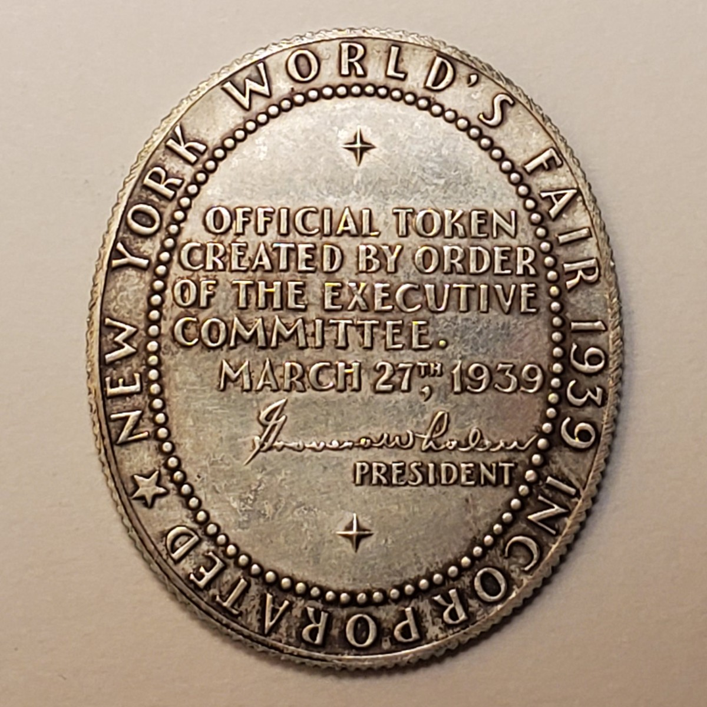

Official token · 1939
World's Fair
“Dollar”
Kreis reduced the New York World's Fair's monumental Trylon and Perisphere to an official silver token sold for one dollar at the exposition.
- Designer
- Henry Kreis
- Producer
- Medallic Art Co.
- Material
- .900 silver
- Catalog
- HK-491
The official token
Fair symbol and authorization


Token photographs from the Kreis family collection.
What “Dollar” meant
An official token, not currency
The piece was not issued by the United States Mint and carried no monetary denomination. It became known as the World's Fair “Dollar” because it sold for one dollar and later entered the so-called dollar catalogs as HK-491.
Medallic Art Company struck the token in .900 fine silver with a reeded edge. Its oval format measures approximately 35 by 30 millimeters.
The Fair's emblem
Trylon and Perisphere
The 700-foot Trylon and the spherical Perisphere formed the Theme Center of the exposition and became its most recognizable visual identity.
Kreis translated their extreme difference in height and mass into a compact relief, placing the narrow Trylon beside the circular Perisphere and surrounding them with the Fair's name.
Sale and distribution
First offered June 23, 1939
Sales began at 11:00 a.m. through the Manufacturers Trust Company branch at the World's Fair. Grover A. Whalen, president of the Fair Corporation, purchased the first token for one dollar.
Surviving references give conflicting edition figures. Until a production or sales record is located, the total mintage remains unresolved.
Specifications
Token details
- Year
- 1939
- Object type
- Official token
- Catalog reference
- HK-491
- Material
- .900 fine silver
- Dimensions
- Approximately 35 × 30 mm
- Family specimen weight
- 15.7 grams
- Edge
- Reeded
- Producer
- Medallic Art Company
- Original price
- $1
- Mintage
- Unresolved
Research sources